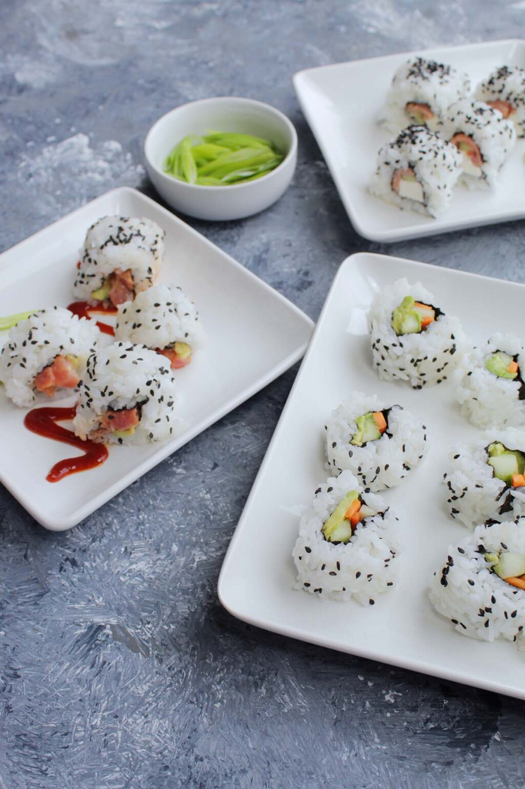

Spicy Tuna Sushi Roll

Description
Spicy tuna roll is a classic American twist on Japanese sushi.
Create a show-stopping sushi roll with minimal ingredients.
Ingredients
- 3 cups cooked sushi rice
- 1/8 cup mayonnaise
- 1 tablespoon sriracha
- 6 ounces sushi-grade tuna
- 2 sheets nori
- 2-3 tablespoons white or black sesame seeds
- 1/2 avocado thinly sliced
- Wasabi
- Pickled ginger
Steps
- Prepare the sushi rice.
- In a medium bowl, whisk together mayonnaise and sriracha.
Once combined, add in cubed tuna.
Cover, and allow to marinate in the refrigerator while preparing
the other ingredients.
- Cut both sheets of nori in half. Lay one piece of nori shiny side down,
on a bamboo mat covered in plastic wrap.
Spread about ¾ cup of rice evenly on the nori sheet.
If needed, wet hands to help spread the rice. If desired, sprinkle with ½ tablespoon of white or black sesame seeds, making sure they adhere to the rice.
- Grab the nori and the rolling mat. Fold the nori over until it touches itself.
Continue rolling until a complete roll is formed.
Squeeze gently, but firmly. Repeat with remaining 3 nori sheets.
- Transfer to a cutting board. With a very sharp knife, slice roll into 8 slices.
Wipe knife on a damp cloth in between each cut to keep the rice from sticking.
- Serve immediately with wasabi and pickled ginger.
Return to top
Return to main page